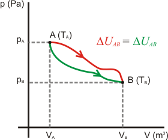
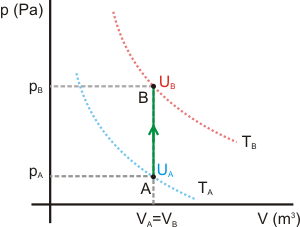

Energia Termica
¿ Que es la Energia Interna de un Gas ideal?
La energía cinética de traslación de las moléculas de un gas ideal está relacionada
con la temperatura absoluta T.
en donde n es el número de moles del gas y R, la constante universal de los gases.
Si se considera que esta energía de traslación constituye toda la energía interna del gas
entonces.
En este caso la energía interna de un gas ideal depende solo de su temperatura y del número
de moles,
no de su presión ni de su volumen. Si las moléculas, además de la energía cinética de
traslación,
tienen otros tipos de energía tales como la energía de rotación, la energía interna será
mayor
que la expresada por la ecuación anterior. Sin embargo, de acuerdo con el teorema de
equipartición,
la energía media asociada con cualquier grado de libertad será
por molécula, de modo que de nuevo, la energía interna dependerá solo de la temperatura y
no del volumen ni la presión.
La energía interna es el resultado de la contribución de la energía cinética de las
moléculas o átomos que lo constituyen, de sus energías de rotación, traslación y vibración,
además de la energía potencial intermolecular debida a las fuerzas de tipo gravitatorio,
electromagnético y nuclear.
La energía interna es una función de estado: su variación entre dos estados es independiente
de la transformación que los conecte, sólo depende del estado inicial y del estado final.

Energía interna de un gas ideal
Para el caso de un gas ideal puede demostrarse que la energía interna depende exclusivamente de
la temperatura, ya en un gas ideal se desprecia toda interacción entre las moléculas o átomos
que lo constituyen, por lo que la energía interna es sólo energía cinética, que depende sólo de
la temperatura. Este hecho se conoce como la ley de Joule.
La variación de energía interna de un gas ideal (monoatómico o diatómico) entre dos estados A y
B se calcula mediante la expresión:
donde n es el número de moles y Cv la capacidad calorífica molar a volumen constante. Las
temperaturas deben ir expresadas en Kelvin.
Para demostrar esta expresión imaginemos dos isotermas caracterizadas por sus temperaturas TA y
TB como se muestra en la figura.
